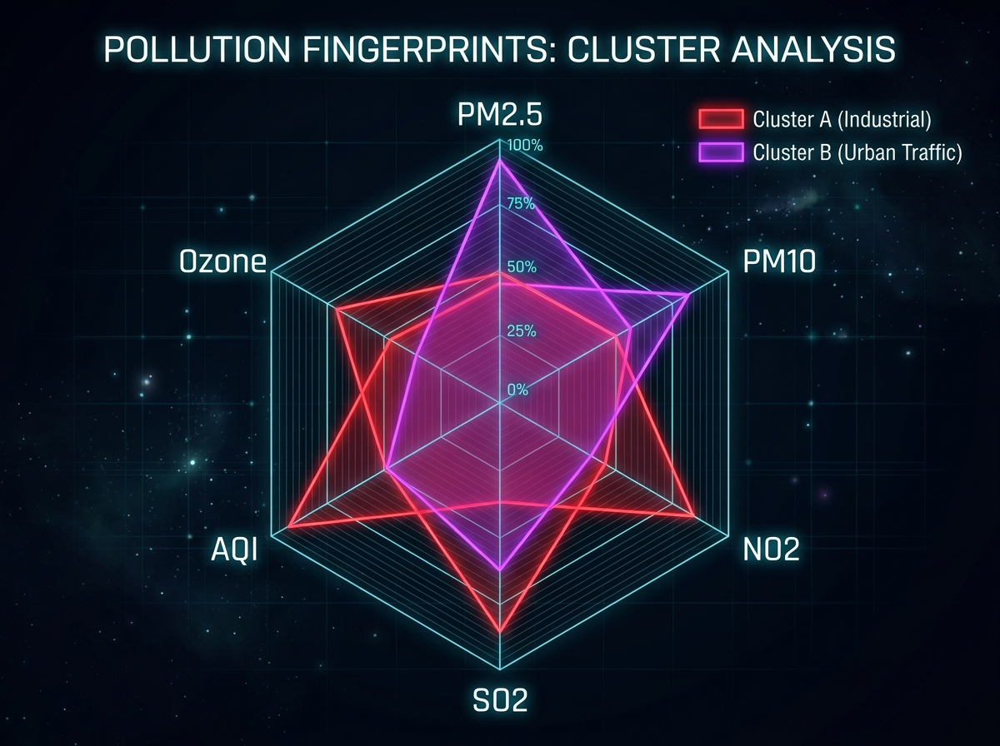

Visualizations
Analysis Charts

PCA 2D Cluster Projection
Principal component projection shows clear linear separation between the two clusters. Cluster centroids marked with star symbols. 71%+ of total variance explained by first two PCs.

Cluster × Month AQI Heatmap
Reveals seasonal pollution rhythm. Cluster 1 dominates Jan–Feb (AQI 400+). Cluster 0 shows monsoon dip (Jul–Sep AQI ≈ 150). Strong winter-summer contrast visible.

Pollutant Fingerprint Radar Chart
Normalised spider chart of cluster pollutant profiles. Cluster 1 dominates all pollutant axes confirming its role as the severe pollution zone.

Optimal k Selection — Elbow + Silhouette
Silhouette peaks sharply at k=2 (0.702). Elbow inflection clearly visible. Davies-Bouldin lowest at k=2 (0.355). All three criteria converge on k=2.